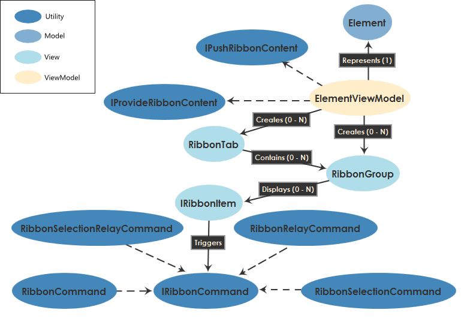

The Command System
The Diagram SDK command system provides base classes, events, plug-in contracts, and helpers for defining and implementing UI commands, including:
- Ribbon content
- Right-click context menu items
- The main menu bar and toolbar
In addition to outlining the design of the Diagram SDK command system, this document also describes best practices for generating command UI in a Diagram SDK Shell application.
Command System Architecture
The following diagram illustrates the high-level architecture of the command system:

Command System Theory of Operation
At the heart of both menu UI population and command execution are the various command base classes provided by the Diagram SDK:
- RibbonCommand - a routed command that can be handled by any arbitrary command handler
- RibbonRelayCommand - a non-routed command that attaches to a known command handler
- RibbonSelectionCommand - a non-routed command that acts on the current selection
- RibbonSelectionRelayCommand - a non-routed command that acts on the current selection
You should never use any other type of command in a Diagram SDK shell application. The main reason for this restriction is to prevent disrupting the shell application's command filtering process, which is crucial to the behavior of various aspects of the editor UI. For routed commands, filtering is accomplished by hooking into the command preview pass for both CanExecute and Execute. For non-routed commands, the ribbon commands directly participate in the filtering process.
Best Practices
Use the following best practices to ensure that your command UI code supports all current and future command system features:
- DO define your commands by using the Ribbon Command types from NationalInstruments.ShellControls.Ribbon (RibbonCommand, RibbonRelayCommand, RibbonSelectionCommand, RibbonSelectionRelayCommand).
- DO NOT use commands that are not based on the Diagram SDK's ribbon command base classes.
- DO use the layout configuration APIs described in this document.
- DO NOT use XAML.
- DO NOT use any custom layout panels (e.g. StackPanels, etc.). Instead, leverage the layout hinting API described in this document, which provides various layout options. If you use custom layout panels, your ribbon UI will likely suffer from poor resize characteristics.
- DO derive your command from RibbonSelectionCommand if it operates on the current selection in the editor.
- DO NOT simply derive all your commands from RibbonCommand, which uses expensive routed commands and events under the hood. Use RibbonCommand only when the command handler is not known up-front.
- DO use command parameters to manage your command state.
- DO NOT attempt to attach state directly to a command. Commands are inherently shared, stateless objects.
- DO declare all your commands with the
statickeyword. - DO NOT use commands that are not static ribbon commands. This requirement is necessary to enable user-customization of the commanding UI. The static ribbon commands are registered with the editor and provide enough information to allow the user to place commands in the QuickAccessToolbar and in the future create their own ribbon tabs and groups. This also reinforces the need to avoid assumptions about a command visual's context within the command UI, since command visuals can be displayed in user-specified locations.
- DO asssume that your command UI visuals may appear in places you might not expect (e.g. in user-defined locations).
- DO NOT make assumptions about a visual's context within the command UI. For example, if your command UI is a RibbonButton, you should not assume that it will only appear in a specific RibbonGroup or RibbonTab. By providing the selection command, the need to create a ViewModel for the selection is reduced and thus the need to create a ViewModel shared via the group or tab is removed.
Selecting a Command Base Class
When choosing which command type to use, first consider whether you need the command to be routed through the visual tree hierarchy. Typically, this is necessary if the command handler is not known up-front. In this case, you will need to derive from RibbonCommand, which uses routed events. If your command has a single handler that is known up-front and is not based on the state of the UI, it is more efficient to use a RibbonRelayCommand, which does not use routed events and commands. Note that unlike RibbonCommand, RibbonRelayCommand takes a delegate object for Execute, and optionally for CanExecute and AttachToVisual.
Routed events and commands work by walking through the visual hierarchy looking for a handler to execute the command. If no handler is found, the command is disabled. These are useful when a command handler is different than the object that registered the command and the presence of the handler in the chain makes it easy for command enabling. For example the Cut command is registered by the documents but is handled by the selection tool. When the selection tool is not present in the UI (such as during VI execution), the command is automatically disabled. Routed commands are much more expensive when performing the CanExecute command updates so they should only be used when needed.
To make it easy to write commands that deal with the selected object(s) on the designer surface, the Diagram SDK provides the RibbonSelectionCommand and RibbonSelectionRelayCommand base classes. The command system automatically passes the current selection and other commonly-used objects to these commands, which makes it easy to act upon the current selection. These two base classes have the same capabilities and performance characteristics, so your choice depends entirely on programming style preferences. RibbonSelectionCommand requires you to derive your command and override the Execute, CanExecute, and AttachToVisual methods, whereas with RibbonSelectionRelayCommand, you pass these method implementations as delegates to the command constructor.
Using Command Parameters
Commands are stateless objects in the sense that the same command can be in used in multiple places in the editor at any given time, or even in multiple editors when more than one project is open. Thus, a command cannot store state directly and must instead rely on a non-shared mechanism to store state. This role is filled by command parameters.
Every visual element provided by the Diagram SDK includes a command parameter with properties suitable for the type of visual element. In general, there are properties for managing states such as enabled, disabled, checked, etc. There are also properties for specific visual types, e.g. to manage the items in a combo box.
When a command is set on a visual element provided by the Diagram SDK, the command’s AttachToVisual method is called and both the visual and its command parameter are passed in as parameters. At this point, the command can use the IServiceAggregator to add additional state data to the command parameter. For example, you can add state objects that implement an interface that can later be queried via ShellCommandInstance.QueryService or ViewModelBase.QueryService.
Managing UI State and Reacting to User Input
The command system supports two ways of managing UI state and reacting to user input: via the CanExecute and Execute methods or via data binding. Note, however, that the Diagram SDK currently does not provide any special mechanisms such that a command can connect to multiple visualizations (e.g. a ribbon visual and a menu item) via data binding.
Traditionally, WPF commands implement CanExecute to update the state of UI elements and implement Execute to react to user input. All of the IRibbonCommand variants support this mode of interaction. The visual elements provided by the Diagram SDK also support this form of command updating in the form of command parameters with properties that allow visual-specific property updating. In this scenario, it is advisable to store state in the command parameters to optimize the CanExecute callback method, since it is called frequently. The Execute method can then be used to handle user interactions.
You can also choose to use data binding to the visual to manage state and user interactions. You should do this by setting the visual's DataContext in your command's AttachToVisual method, so that the framework can create additional UI visualizations of the command, e.g. in the Quick Access Toolbar. When setting up the data binding, you can choose to bind to state in the command parameter or other bindable objects in the system.
Adding Command Visuals to a Shell Application
The Diagram SDK provides interfaces, helpers, and MEF contracts to facilitate adding command visuals to common locations in the editor UI.
Defining Contextual Tab Groups Via Editing Contexts
Editing contexts are objects that define the general appearance of the user-facing contextual tab groups presented in a shell application. When an object is selected, one or more editing contexts will be used to display its command visuals. For example, editing contexts define the content of ribbon tabs.
Each editing context has a string alias that is used to identify it. ViewModels indicate which editing contexts they are associated with by returning a set of aliases from the GetEditingContexts methods of IProvideRibbonContent and IPushRibbonContent.
Ultimately, the aggregate collection of editing contexts returned by all ribbon providers is presented in the ribbon. In many cases, it is desirable to merge editing contexts together when displaying the content for an object. For example, the Node Configuration Framework defines an editing context that is generally used for all Nodes. Some nodes need to augment the tabs of this editing context to add additional configuration tabs. To do this, a new editing context can be specified that is a superset of the configuration context. This superset context can add a “WhenActiveAlias” attribute to the definition of the context. This attribute indicates that if both the configuration framework editing context and the superset context are specified, the configuration framework context should be excluded since the other context is a superset. All ribbon content that is defined to be in the node configuration context will then be added to the other context instead. A single context can have as many WhenActiveAlias attributes as needed.
When adding content to the ribbon tabs, the RibbonPlacementProperties set of attached properties can be added to ribbon groups to control where the group will be added in the ribbon. The properties can specify weights so that groups can be sorted. The properties can also indicate to which contextual tab the group should be added.
Populating Ribbon Content for Elements
When a visual is selected, the Diagram SDK automatically calls the CreateRibbonContent method of the corresponding ViewModel. Thus, to provide custom ribbon content, you should override the IProvideRibbonContent.CreateRibbonContent method in your ViewModel. All the ViewModel base classes implement IProvideRibbonContent and provide virtual methods that can be overridden.
The CreateRibbonContent method should create all the visuals that you want to expose in the ribbon. The visuals should be IRibbonItem objects associated with commands and wrapped in a RibbonGroup or a RibbonTab (e.g. in the case of a Document ViewModel). The RibbonGroup class provides an AddItem API, which accepts either IRibbonItem visuals or IRibbonCommand objects directly.
View Models can also filter content that is provided by Push Ribbon content providers as well as their base classes by looking at the content of the display context and using the context's Remove methods.
Populating Popup Menus
The Diagram SDK populates the popup menu for selected items from IRibbonCommand objects in the same manner as the ribbon, except it filters based on the presence of PopupMenuPath. When you right-click an object, the system queries the relevant EditingContexts for commands that specify a PopupMenuPath. You can also use the MenuOnlyCommands collection to add popup-specific commands.
Selected objects can also directly handle the DisplayPopupMenu routed event and display a custom popup menu by adding commands that define the popup menu. Visual elements that are not part of the current selection yet still need to display a popup menu should handle the DisplayPopupMenu event and add commands to be displayed.